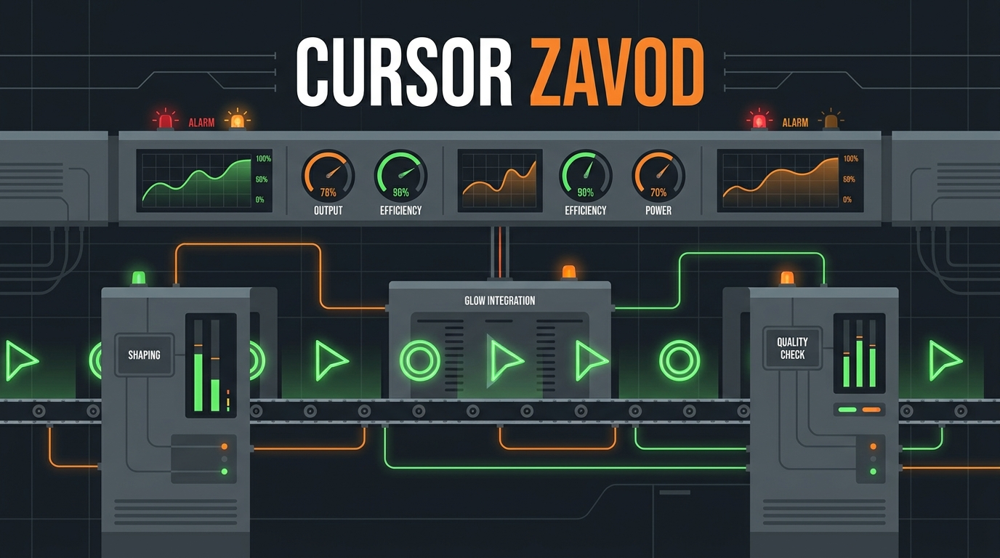
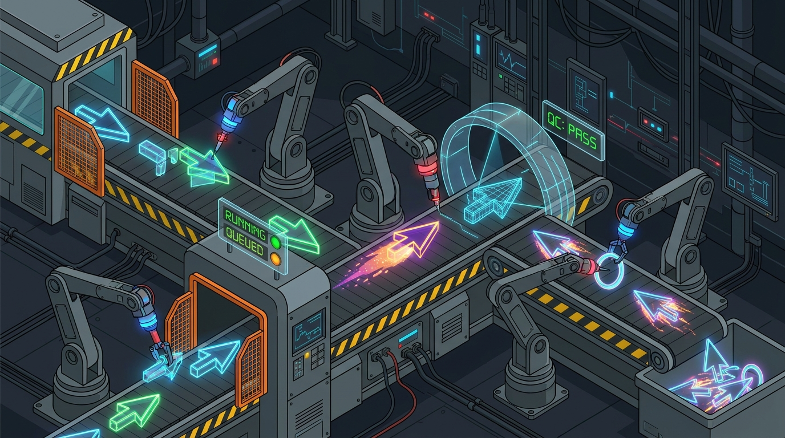

Тренды → производство → пульт HMI → одобрение → продажа. Без участия человека, кроме одной галочки.
Cursor Zavod — производственный портал на автопилоте. Каждое утро в 07:00 UTC завод сам анализирует дизайн-тренды, выпускает партию из 10 анимированных веб-курсоров и присылает владельцу письмо со ссылкой на пульт. Владелец тестирует курсоры вживую, ставит галочки — одобренное автоматически пакуется и публикуется на Gumroad. Ручной режим: чат «Цех», где курсор создаётся текстовым промптом.

| Канал | Продукт | Цена |
|---|---|---|
| Gumroad (авто) | Пак-пресет: cursor.config.json + README + обложка | $4–14 |
| npm (бесплатно) | Библиотека cursorfx — воронка и охват (open-core) | $0 |
| M3: своя витрина | Бандлы, подписка на все дропы | TBD |
cursore-zavod-maker/ ├─ CLAUDE.md правила (<200 строк) ├─ AGENTS.md реестр агентов ├─ .claude/ │ ├─ rules/ path-gated правила │ ├─ skills/ produce-drop, publish │ ├─ agents/ trend-scout, producer, │ │ qa-inspector, publisher │ ├─ workflows/ release-drop.js │ └─ hooks/ guard-secrets ├─ docs/ SPEC, PDF, ADR ├─ packages/cursorfx/ библиотека эффектов ├─ factory/ автономное производство │ ├─ trends.js тренд-агент │ ├─ produce.js генератор дропа │ ├─ chat.js промпт → EffectSpec │ ├─ imagegen.js Replicate FLUX │ ├─ publish.js Gumroad / бандл │ ├─ notify.js Resend email │ └─ data/ trends.json, drops/, │ queue.json (git = БД) ├─ portal/ HMI-пульт (Vite) └─ .github/workflows/ ci + daily-factory
Эта спека — источник истины. Агенты строят от неё; изменения — сначала в спеку (ADR), потом в код.
Каждый дроп и публикация — commit. Полный аудит производства бесплатно: история, откат, blame.
Все ключи опциональны: без Anthropic — эвристический парсер чата; без Replicate — SVG/эмодзи; без Resend — лог; без Gumroad — локальный бандл.
Завод не ждёт человека. Владелец видит только отклонения (тревоги ОТК) и очередь на одобрение.
| Агент | Роль | Запуск | Выход |
|---|---|---|---|
| trend-scout | сигналы трендов, веса палитр/стилей | cron 07:00 | trends.json |
| producer | дроп дня: архетипы × тренды, сид = дата | после scout | drops/YYYY-MM-DD.json |
| qa-inspector | валидация схем, лимиты, читаемость | в конвейере | alarms[] в дропе |
| publisher | zip + cover → Gumroad draft → enable | по одобрению | queue.json + журнал |
| notifier | письмо со ссылкой на пульт | после produce | email (Resend) |
| Секрет | Даёт | Без него |
|---|---|---|
| ANTHROPIC_API_KEY | умный чат промпт→курсор | эвристический парсер |
| REPLICATE_API_TOKEN | FLUX-спрайты для image-курсоров | эмодзи/SVG-курсоры |
| RESEND_API_KEY | утреннее письмо | ссылка в лог Actions |
| GUMROAD_ACCESS_TOKEN | автопубликация в draft-товары | готовый бандл в /published |
фон #1a1d21 · панель #22262b · линия #2e343b
■ RUN #2ecc71 · ■ QUEUED #f39c12
■ ALARM #e74c3c · ■ INFO #3498db
Правило high-performance HMI: цвет — только у статусов. Внимание оператора — только на отклонения.
ПУЛЬТ — статус линии, датчики трендов, тревоги
КОНВЕЙЕР — дроп дня, live-тест, галочки одобрения
ЦЕХ-ЧАТ — курсор по текстовому промпту
СКЛАД — все дропы, фильтры, статусы
ПРОДАЖИ — опубликованное, ссылки Gumroad
| Веха | Состав | Критерий готовности |
|---|---|---|
| M1 · сейчас | монорепо, cursorfx, фабрика, HMI-пульт, cron, письмо | дроп приходит письмом, одобрение работает |
| M2 | Replicate-спрайты, Anthropic-чат, Netlify Functions | курсор из чата с картинкой ≤ 60 сек |
| M3 | своя витрина, A/B цен, аналитика продаж | первый $100 MRR |
| Риск | Митигация |
|---|---|
| Gumroad API не создаёт товары | пул черновиков + фолбэк-бандл |
| AI-слоп в дропах | ОТК + exception review |
| Утечка ключей (репо публичный) | только GitHub Secrets, hook-страж |
| Дрейф cron | идемпотентный produce (сид = дата) |
| KPI | Цель |
|---|---|
| Курсоров в день | ≥ 10, 0 действий |
| Письмо владельцу | ≤ 07:10 UTC |
| Время владельца | ≤ 10 мин/день |
| Дропы без тревог ОТК | ≥ 95 % |
Спецификация утверждена владельцем 2026-07-08 по результатам опроса: дизайн — Factory HMI · архитектура — монорепо · автопилот — GitHub Actions + Netlify · ключи — Replicate, Anthropic, Resend. Документ инициирует проект в репозитории github.com/Ex13m/cursore-zavod-maker.